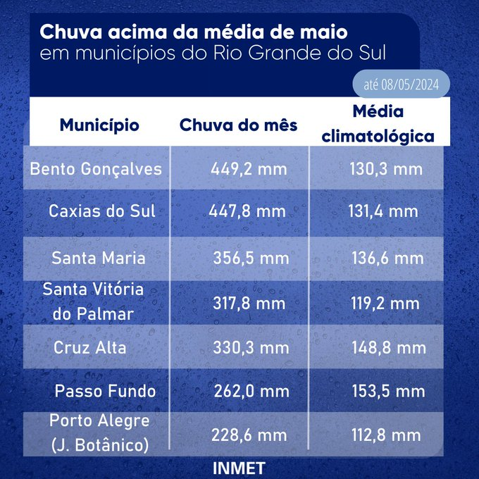

O Rio Grande do Sul está enfrentando uma das piores tragédias da sua história, e uma das principais causas dessa sequência de enchentes e chuvas são as mudanças climáticas e a maior frequência de eventos climáticos extremos. Cerca de 78% do estado foi afetado pelas chuvas e enchentes, até agora 169 mortes foram confirmadas e 56 pessoas estão desaparecidas, e os números continuam aumentando. Na cidade, muitas pessoas ficaram desabrigadas e perderam suas casas e pertences, além disso a população está sofrendo com as doenças disseminadas pela água contaminada por matéria orgânica, dejetos humanos e fezes de animais. Trabalhadores rurais também podem enfrentar dificuldades econômicas devido a perda de colheitas, rebanhos e propriedades.
As enchentes no Rio Grande do Sul ganharam atenção mundial devido a sua extensão e gravidade, muitos jornais nacionais e internacionais focaram sua cobertura na tragédia. Essa tragédia é um reflexo as mudanças climáticas e fenômenos naturais extremos. A repercussão internacional ajuda a trazer visibilidade e apoio para as vítimas, e também contribuí para a conscientização sobre a necessidade de politicas públicas contra desastres naturais.
As enchentes no Rio Grande do Sul são um fenômeno recorrente que resulta de uma combinação de fatores naturais e humanos. Dentre as causas naturais, destacam-se as intensas chuvas sazonais, especialmente no período de verão, quando sistemas de baixa pressão e frentes frias provocam precipitações volumosas em curto espaço de tempo. A topografia da região, com muitos rios e áreas de planície, facilita o acúmulo de água. Por outro lado, fatores humanos também contribuem significativamente para as enchentes. A urbanização desordenada, com construções em áreas de risco e a impermeabilização do solo, impede a absorção da água da chuva. A falta de manutenção e de planejamento adequado dos sistemas de drenagem urbana agrava o problema. Além disso, o desmatamento e a degradação ambiental nas bacias hidrográficas reduzem a capacidade de infiltração do solo e aumentam o escoamento superficial. Essas causas combinadas levam a enchentes frequentes, causando danos materiais significativos, perda de vidas e impactos socioeconômicos consideráveis para a população do estado.
As inundações no estado do Rio Grande do Sul entraram para a história como uma das piores catástrofes climáticas do Brasil, perdas e destruição incalculáveis em mais de 425 cidades gaúchas que foram afetadas de alguma forma por essas enchentes.As inundações alcançaram dimensões extraordinárias, cobrindo diversas cidades por completo. De acordo com o Instituto Nacional de Meteorologia (INMET), alguns municípios gaúchos receberam na primeira semana de maio 200 a até 450 mm de chuva, o que representa mais que o dobro do acumulado esperado para todo o mês!
Atualmente, estamos em um período de El Niño, com isso seria o El Niño o responsável pela catástrofe que devastou o Rio Grande do Sul?
Segundo a Organização Meteorológica Mundial, o El Niño contribuiu para obstruir as frentes frias e concentrar as áreas de instabilidade sobre o Rio Grande do Sul. Contudo, além do El Niño, é importante destacar que outras regiões dos oceanos mundiais têm experimentado Temperaturas da Superfície do Mar (TSMs) significativamente elevadas, resultando em recordes consecutivos de temperatura média global dos oceanos ao longo de vários meses. Esse excesso de calor é transferido para a atmosfera e aumenta o fornecimento de umidade atmosférica, intensificando assim os eventos climáticos extremos em várias partes do mundo. No contexto brasileiro, as temperaturas anormalmente elevadas nas águas do Oceano Atlântico Sul, próximo à linha do equador, podem ter desempenhado um papel no aumento da umidade transportada para a região Sul por meio dos "rios voadores", ampliando ainda mais as chuvas concentradas nessa área. Assim, além do El Niño, outros fatores podem ter contribuído para esse cenário.
A tragédia ocorrida no Rio Grande do Sul ressalta a necessidade de estarmos preparados para eventos climáticos extremos, a importância de investir em infraestrutura resistente e a urgência de adotar medidas para reduzir os impactos das mudanças climáticas. Além disso, evidencia a relevância da colaboração entre autoridades governamentais, comunidades locais e especialistas em clima para lidar com os desafios decorrentes dos eventos climáticos cada vez mais frequentes e intensos.

Imagens aéreas transmitidas ao vivo mostraram um cavalo solitário preso em cima de um telhado, incapaz de escapar das inundações na cidade de Canoas. Todo o país acompanhou com esperança o destino do animal, carinhosamente apelidado de Caramelo, e o resgate foi realizado no dia seguinte. Atualmente, Caramelo está se recuperando satisfatoriamente no hospital veterinário da Ulbra, para onde foi levado por um grupo de voluntários.


Foram necessárias instalações de barreiras de contenção para evitar que a água arrastasse os cilindros de gás de uma distribuidora em Canoas, na Região Metropolitana de Porto Alegre.


A Rua Henrique Bertoluci, localizada em Gramado, na região serrana do Rio Grande do Sul, desmoronou devido às fortes chuvas que afetaram todo o estado.